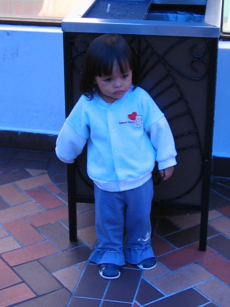
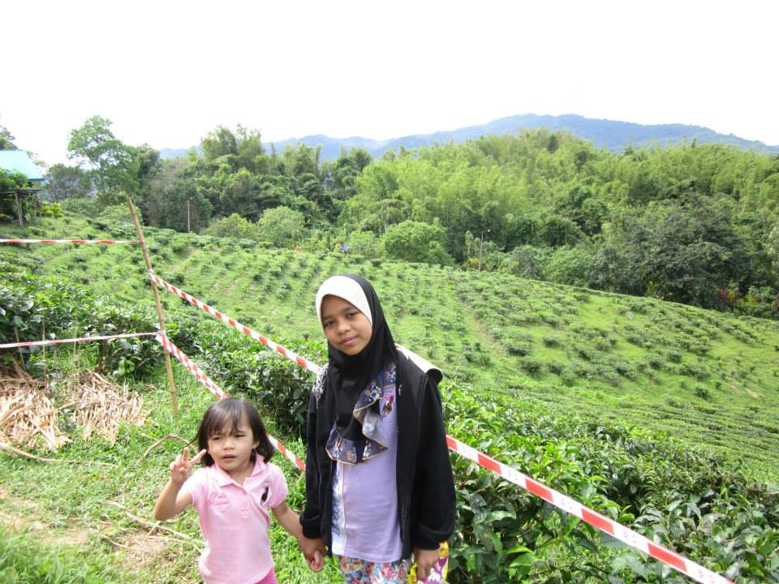
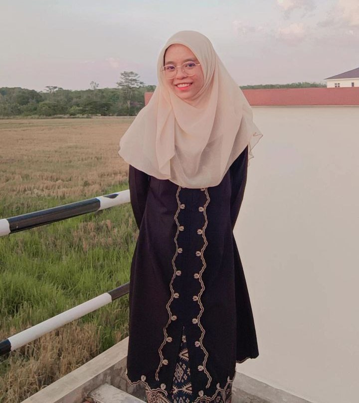

GET TO KNOW ME BETTER :3



- My full name is Naurah Qistina Binti Mohd Radzi
- I'm 20 years old this year :)
- I was born on 16th of February 2004
- My mother gave birth to me at
- My blood type is O
- I'm the eldest out of five siblings
- I'm also the first grandchild on my father's side, so I'm quite loved by my grandparents >_<
- I lived and grew up at Kuala Lumpur for 18 years before we moved to Kedah on 2022 (I miss KL)
- I'm an introvert but I can be pretty talkative when I'm comfortable with someone
- People always say I'm a spitting image of my father but honestly I can't see the resemblance.
- I have an G6PD deficiency which is a deficiency related to blood but it is a pretty common illness. Although I have allergies to some things because of it.